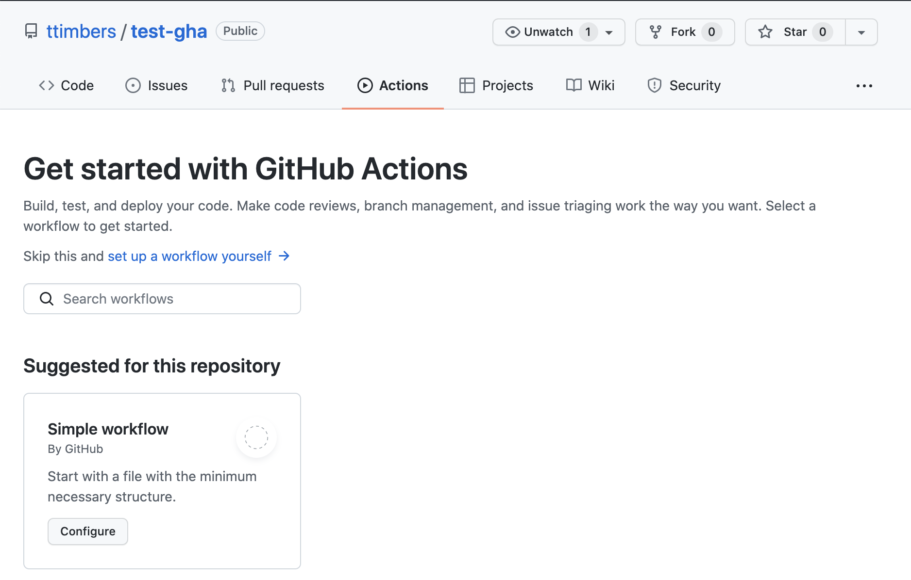
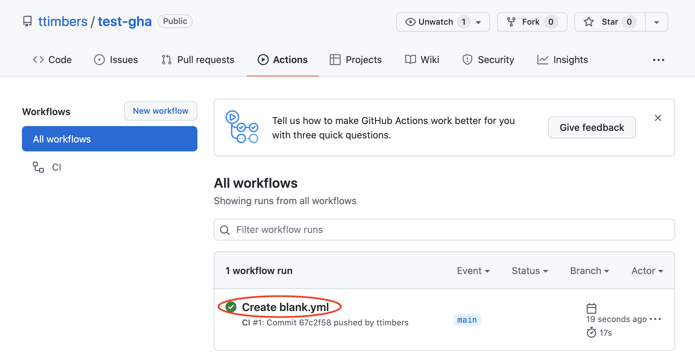
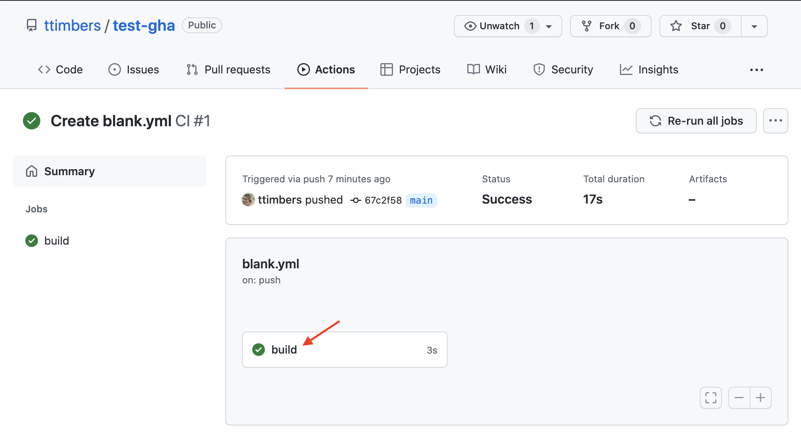
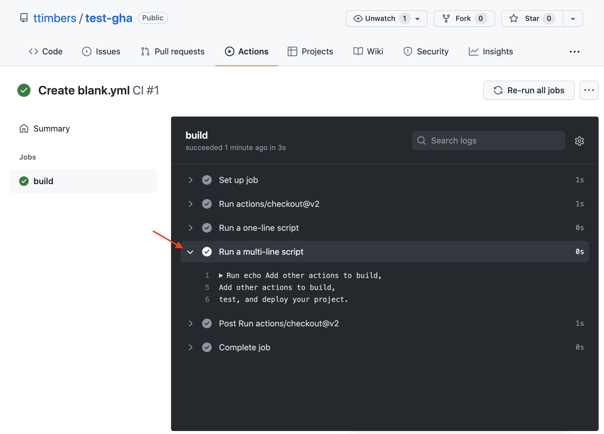

27 Automated testing and continuous integration
Learning Objectives
- Argue the costs and benefits of using automated test infrastructure
- Define continuous integration testing
- Explain why continuous integration testing is superior to manually running tests
- Define the following key concepts that underlie GitHub Actions:
- Actions
- Workflow
- Event
- Runner
- Job
- Step
- Use matrix GitHub Actions workflows to reduce workflow redundancy
- Use GitHub Actions to set-up automated running of tests by
pytestupon push to any branch - Use GitHub Actions to set-up automated running of tests by
testthatupon push to any branch
27.1 Continuous Integration (CI)
Defined as the practice of frequently integrating code (e.g., several times a day) changes from contributors to a shared repository. Often the submission of code to the shared repository is combined with automated testing (and other things, such as style checking) to increase code dependability and quality.
27.1.1 Why use CI + automated testing
- detects errors sooner
- reduces the amount of code to be examined when debugging
- facilitates merging
- ensures new code additions do not introduce errors
27.2 GitHub actions
A tool and service for automating software development tasks, located in the same place where you already store your code.
27.2.1 Key concepts:
Actions: Individual tasks you want to perform.
Workflow: A collection of actions (specified together in one file).
Event: Something that triggers the running of a workflow.
Runner: A machine that can run the Github Action(s).
Job: A set of steps executed on the same runner.
Step: A set of commands or actions which a job executes.
27.2.2 Examples of GitHub Actions
You have already interacted with GitHub Actions in this class! We used it to:
Generate the issues in the
dsci-310-homeworkrepo upon push to the “create” branch: https://github.com/UBC-DSCI/dsci-310-homework/blob/master/.github/workflows/create_issues.ymlGenerate a pull request in the
review-my-pull-requestrepo upon push to the “pr” branch: : https://github.com/ttimbers/review-my-pull-request/blob/master/.github/workflows/pr.yml
Getting to know GitHub Actions workflows
We are going to each create our own GitHub Actions workflow. This workflow is a very simple toy example where we run some echo shell commands to print things to the runner’s terminal.
Steps:
Create a new public GitHub.com repository with a
README.Click on the “Actions” tab
Click on the first “Set up this workflow” button

Click on the two green commit buttons to add this workflow file
Go to the “Actions” tab and look at the build logs by following these instructions:
Click on the message associated with the event that created the action:

Click on the build link:

Click on the arrow inside the build logs to expand a section and see the output of the action:

27.2.3 GitHub Actions workflow file:
A YAML file that lives in the .github/workflows directory or your repository which species your workflow.
# This is a basic workflow to help you get started with Actions
name: CI
# Controls when the workflow will run
on:
# Triggers the workflow on push or pull request events but only for the main branch
push:
branches: [ main ]
pull_request:
branches: [ main ]
# Allows you to run this workflow manually from the Actions tab
workflow_dispatch:
# A workflow run is made up of one or more jobs that can run sequentially or in parallel
jobs:
# This workflow contains a single job called "build"
build:
# The type of runner that the job will run on
runs-on: ubuntu-latest
# Steps represent a sequence of tasks that will be executed as part of the job
steps:
# Checks-out your repository under $GITHUB_WORKSPACE, so your job can access it
- uses: actions/checkout@v2
# Runs a single command using the runners shell
- name: Run a one-line script
run: echo Hello, world!
# Runs a set of commands using the runners shell
- name: Run a multi-line script
run: |
echo Add other actions to build,
echo test, and deploy your project.The file above has:
- 3 possible event triggers (push to main, pull request to main, or manual dispatch through the Actions tab)
- runs on an Ubuntu OS
- one job called “build”
- 3 steps
- the type of runner is ubuntu
- the first step uses an action, and the following two steps run commands
27.2.4 Commands vs actions
Steps can consist commands or actions. Let’s spend some time to discuss what each of these are and how they differ.
27.2.5 Commands
Steps that use commands look like the one shown below. They consist of a name and a run parameter. The commands listed after run are run in the runner’s shell:
- name: Run a one-line script
run: echo Hello, world!As shown in the file above, we can run multiple commands in a step using the | character:
- name: Run a multi-line script
run: |
echo Add other actions to build,
echo test, and deploy your project.27.2.6 Actions
Steps that use actions look like the one shown below (which builds and publishes Docker containers). They always have a uses parameter, and often also have name and with parameters. The uses parameter specifies which action to use, and the with parameters provide arguments to those actions. The @master at the name of the uses line, specifies whether to use the version at the head of the actions default branch, or a specific version (e.g., @v2).
- name: Publish to Registry
uses: elgohr/Publish-Docker-Github-Action@master
with:
name: myDocker/repository
username: ${{ secrets.DOCKER_USERNAME }}
password: ${{ secrets.DOCKER_PASSWORD }}Actions commonly perform one task in a workflow. There are two ways to build actions, either using JavaScript or by creating a Docker container that runs a shell script. For the latter such actions are defined by:
- a Dockerfile
- a shell script to run inside the Docker container
In this course we will use actions built by others, but not build our own. That is beyond the scope of this course. However, if you are interested in learning more, I point you to the documentation below.
Optional:
For example, for the action above see its: - Dockerfile - endpoint.sh script - GitHub repo
Read the docs here to learn how to build your own Docker container GitHub action: https://help.github.com/en/actions/building-actions/creating-a-docker-container-action
Read the docs here to learn how to build your own JavaScript GitHub action: https://help.github.com/en/actions/building-actions/creating-a-javascript-action
27.3 Storing and use GitHub Actions credentials safely via GitHub Secrets
Some of the tasks we want to do in our workflows require authentication. However, the whole point of this is to automate this process - so how can we do that without sharing our authentication tokens, usernames or passwords in our workflow files?
GitHub Secrets is the solution to this!
GitHub Secrets are encrypted environment variables that are used only with GitHub Actions, and specified on a repository-by-repository basis. They can be accessed in a workflow file via: ${{ secrets.SECRET_NAME }}
See GitHub’s help docs for how to do this: https://help.github.com/en/actions/configuring-and-managing-workflows/creating-and-storing-encrypted-secrets
27.4 Authenticating with the GITHUB_TOKEN
What if you need to do Git/GitHub things in your workflow? Like checkout your files to run the tests? Create a release? Open an issue? To help with this GitHub automatically (i.e., you do not need to create this secret) creates a secret named GITHUB_TOKEN that you can access and use in your workflow. You access this token in your workflow file via:
${{ secrets.GITHUB_TOKEN }}27.5 Creating and accessing environment variables in GitHub Actions
Sometimes our commands or actions need environment variables. In both of these scenarios, we create environment variables and access them within a step via:
steps:
- name: Hello env vars
run: echo $VARIABLE_NAME1 $VARIABLE_NAME2
env:
VARIABLE_NAME1: <variable_value1>
VARIABLE_NAME2: <variable_value2>27.6 Matrix workflows
We don’t want our software to just work on one operating system, or just one version of Python or R. Ideally it is compatible with the three major operating systems as well as a couple versions of the programming language it was written it.
How do we ensure this? Well, we could have several GitHub Action workflows, each of which runs the job on a different version of Python, on a different operating system. However, there would be a lot of redundancy in those workflows, with the only differences between them being the operating system of the runner and the version of Python.
A more efficient way to do this with GitHub Actions workflows is to use matrix workflows. In these workflows, we use a matrix variable, which we specify as:
strategy:
matrix:
<variable_name>: [<value1>, <value2>]which we can refer to in the workflow steps as:
${{ matrix.<variable_name> }}When we do this, GitHub Actions runs multiple jobs, one for each of the values in the matrix variable.
In English, what does this workflow file do?
Now that we have some understanding of GitHub Actions workflows, let’s use that knowledge to write in English what each of the steps do in this more complicated version of the workflow shown above.
on:
push:
branches: [main, master]
pull_request:
branches: [main, master]
name: R-CMD-check
jobs:
R-CMD-check:
runs-on: ${{ matrix.config.os }}
name: ${{ matrix.config.os }} (${{ matrix.config.r }})
strategy:
matrix:
config:
- {os: windows-latest, r: 'devel'}
- {os: windows-latest, r: 'release'}
- {os: ubuntu-latest, r: 'devel'}
- {os: ubuntu-latest, r: 'release'}
steps:
- name: Checkout files from GitHub version control repository
uses: actions/checkout@v2
- name: Setup R
uses: r-lib/actions/setup-r@v2
- name: Install R packages
uses: r-lib/actions/setup-r-dependencies@v2
with:
extra-packages: any::rcmdcheck
needs: check
- name: Checks if R package can be installed
uses: r-lib/actions/check-r-package@v2Steps in English:
checking out the files of the repository to the runner (last commit)
Set up and install Python on the runner
Use poetry to install dependencies and the package
Install the package and its dependencies
Run tests and check coverage, generate a coverage report
Send the coverage report to codecov.io
Renders the documentation (to check there are no errors in this process)
How many jobs are run? What does each do?
FILL IN DURING CLASS
Note that we omitted the Windows operating system in the example above. The reason for this is that the snok/install-poetry@v1 GitHub action requires more configuration to setup correctly on Windows, and the purpose of the example above was to focus on demonstrating how to use matrices in general using GitHub actions. If you are interested in setting up a runner using window-latest please follow the additional configuration instructions here to make it work: https://github.com/snok/install-poetry?tab=readme-ov-file#running-on-windows
27.7 Setting up GitHub Actions workflows to check tests and test coverage
Add the
covrpackage as a suggested dependendency to your package via:usethis::use_package("covr", type = "Suggests")Add a GitHub Actions workflows that runs a comprehensive build check across the major operating systems and runs the test suite and calculates coverage via:
usethis::use_github_action_check_standard()andusethis::use_github_action("test-coverage.yaml")Link your R package GitHub repo with codecov.io
Copy the codecov.io token for that repo from codecov.io and add that as a GitHub Secret named
CODECOV_TOKENAdd the codecov.io badge markdown syntax to your
README.Rmdand knit to render theREADME.mdfile.Push your local changes to GitHub and sit back and watch the magic happen ✨

27.8 Setting up GitHub Actions workflows with R
The dev version of usethis has functions that will let you set-up your CI using GitHub Actions with ease! Here’s a quickstart guide below, and more details can be found in the Github actions with R book.
Add the
covrpackage as a suggested dependendency to your package via:usethis::use_package("covr", type = "Suggests")Add a GitHub Actions workflows that runs a comprehensive build check across the major operating systems and runs the test suite and calculates coverage via:
usethis::use_github_action_check_standard()andusethis::use_github_action("test-coverage.yaml")Link your R package GitHub repo with codecov.io
Copy the codecov.io token for that repo from codecov.io and add that as a GitHub Secret named
CODECOV_TOKENAdd the codecov.io badge markdown syntax to your
README.Rmdand knit to render theREADME.mdfile.Push your local changes to GitHub and sit back and watch the magic happen ✨